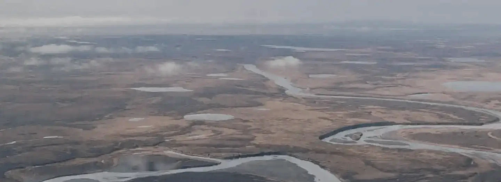
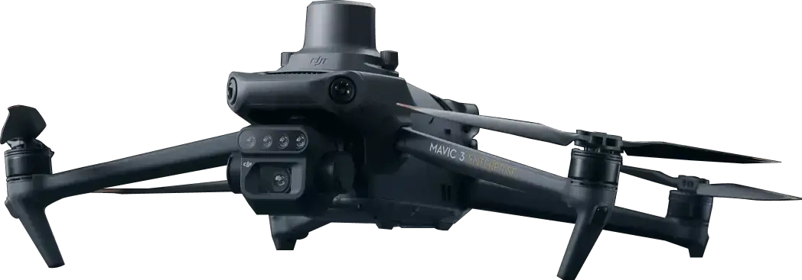
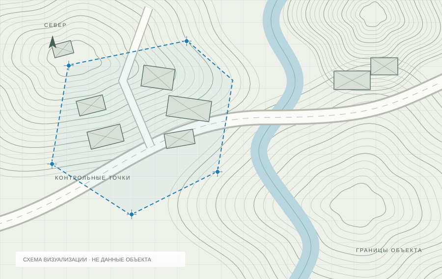
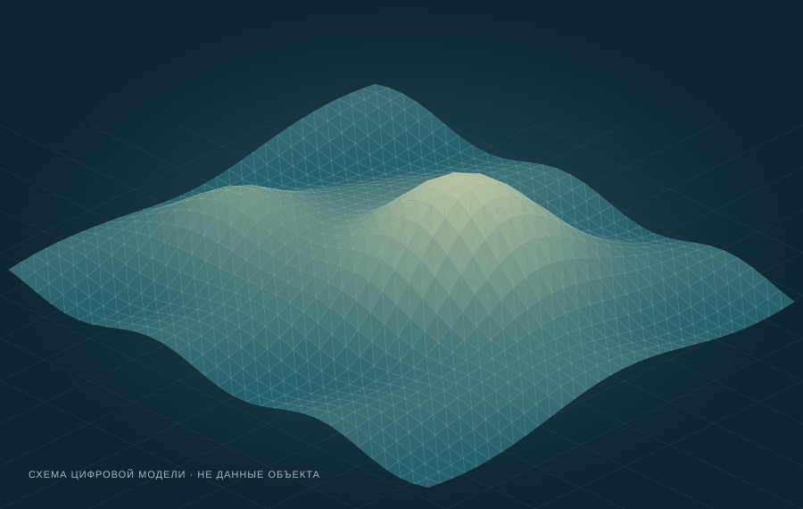

4 150га
Кемеровская область / 94 дня
Топографическая основа
для газопровода
Ортофотоплан, топоплан, цифровая модель местности и материалы для отчета о геодезических изысканиях.
ООО «Аланс»
Получите ортофотопланы, топопланы и цифровые модели для проектирования, строительства и расчёта объёмов.
Нет готового ТЗ? Поможем определить состав работ.


Выберите задачу и посмотрите, какие материалы получит ваша команда. Состав, точность и форматы закрепим в техническом задании.

По техническому заданию
Согласованная система
Файлы + описание выдачи

Рельеф / поверхность
По задаче и условиям
По техническому заданию

Исходная поверхность, границы расчета и отчетный состав фиксируются в задании.
Данные полевой съемки
Согласованная методика
Материалы + отчет
Иллюстрации показывают типы материалов. Пример выдачи под вашу задачу можно запросить у инженера.
Проекты из практики Центра беспилотных технологий: от производственного участка до территории в тысячи гектаров.
Кемеровская область / 94 дня
Ортофотоплан, топоплан, цифровая модель местности и материалы для отчета о геодезических изысканиях.

Комсомольск-на-Амуре
Инженерно-топографические планы масштабов 1:1000 и 1:2000 по существующим и строящимся объектам.

Дальнегорск
Аэрофотосъемка и обрисовка: топографический план с высотными отметками для горных и отвальных работ.
Срок 94 дня относится к полному комплексу конкретного проекта. Для нового объекта стоимость и график рассчитываются отдельно.
Обсудить похожий объект ↗Цена зависит не только от площади. На расчет влияют результат, условия съемки, логистика и объем обработки.
Что делаем и передаемСъемка, обработка, нужные материалы и контроль.
Что входит в стоимостьСогласованный объем, выезд и дополнительные работы — отдельными позициями.
Когда получите материалыПодготовка, полевой этап и обработка — с учетом условий объекта.
Для первичного обсуждения достаточно региона и задачи. Границы, площадь и ТЗ помогут точнее оценить объем работ.
Согласуем требования до съёмки. Проверим материалы перед передачей. Ваша команда получит комплект под конкретную инженерную задачу.
Назначение, плановая и высотная точность, система координат и высот, масштаб, форматы и комплектность.
Заранее определяем метод контроля и состав подтверждающих материалов. Не подменяем точность размером пикселя.
Фиксируем критерии передачи результата и порядок работы с замечаниями в задании и договоре.
Пример выдачи и требования можно обсудить вместе с вашим проектировщиком.
Обсудить требования с инженером ↗
Полевые специалисты и камеральная обработка — в одном проекте. До заключения договора согласуем состав работ, требования к результату и необходимые документы.

Ваша задача — показать объект и объяснить, для чего нужны данные. Технические требования определяем совместно.
Обсудим объект, требования и условия. Определим состав работ, стоимость и график.
Подготовим полевой этап, соберем и обработаем данные. Изменения объема обсудим отдельно.
Сопоставим результат с заданием. Передадим согласованные файлы и разберем замечания в порядке договора.
Ограничения не должны становиться неожиданностью после начала проекта. Учитываем их при выборе метода и планировании.
Проверяем действующие ограничения и доступ на объект. Перечень согласований и ответственность сторон определяем для конкретного проекта.
Для скрытого растительностью рельефа или подземных коммуникаций одной фотосъемки может быть недостаточно. Обсуждаем другой или комбинированный метод.
Учитываем погодные условия, готовность исходных данных и доступ. В предложении разделяем подготовку, съемку и обработку материалов.
Не уверены, какой метод подойдет? Начните с объекта и задачи, а не с выбора оборудования.
Обсудить условия объекта ↗Ключевые условия не прячем в мелком шрифте. Технические детали уточняем по вашему объекту.
Да. Достаточно расположения объекта и описания задачи. Неизвестные параметры уточним вместе с вами или вашим проектировщиком.
Нет. Ортофотоплан — геопривязанная фотооснова. Топографический план содержит подготовленное векторное описание ситуации и рельефа. Его состав и необходимые дополнительные работы определяются заданием.
Это зависит от назначения, состава и требований к конкретному комплекту. До начала работ нужно согласовать их с проектировщиком. Одна аэрофотосъемка не заменяет весь комплекс инженерных изысканий.
Форматы файлов, систему координат и высот согласуем с вашей командой до съемки. Важно заранее назвать программное обеспечение, в котором будут использоваться материалы.
Состав результата, логистику и включенные работы нужно зафиксировать в предложении. Изменение границ, требований или объема рассматривается отдельно — с согласованием до выполнения.
Возможность оценивается по расположению, доступу и действующим ограничениям. Опыт компании не означает, что любой объект доступен для съемки без отдельной проверки.
Метод следует выбирать по экономике и требованиям задачи. Покажите объект: сравним необходимый состав работ. На небольшом или сложном участке другой способ сбора данных может быть целесообразнее.
До передачи исходных данных согласуем допустимый состав и канал обмена. Требования к хранению, доступу и публикации результатов нужно закрепить в договоре.
Контакт ответственного специалиста, критерии приемки и порядок исправления несоответствий должны быть определены в договоре. Изменение первоначального задания рассматривается отдельно.
Расскажите, где находится объект и что нужно получить. Поможем собрать исходные данные и определить следующий шаг.
1 Уточним исходные данные и требования
2 Предложим состав результата и план работ
3 Рассчитаем стоимость по вашему объекту